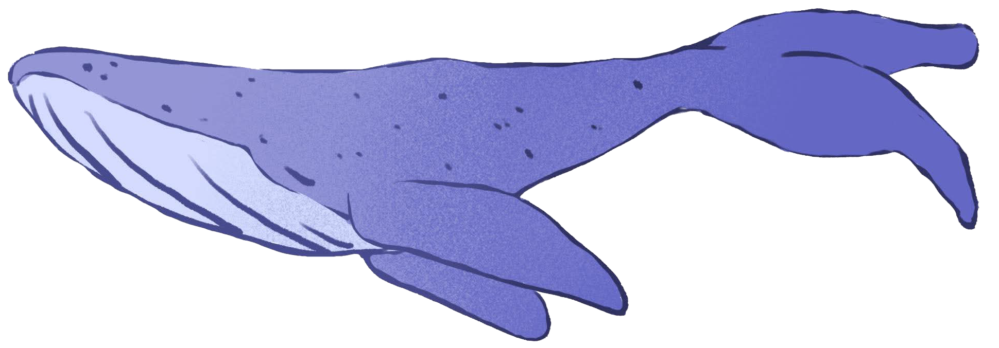
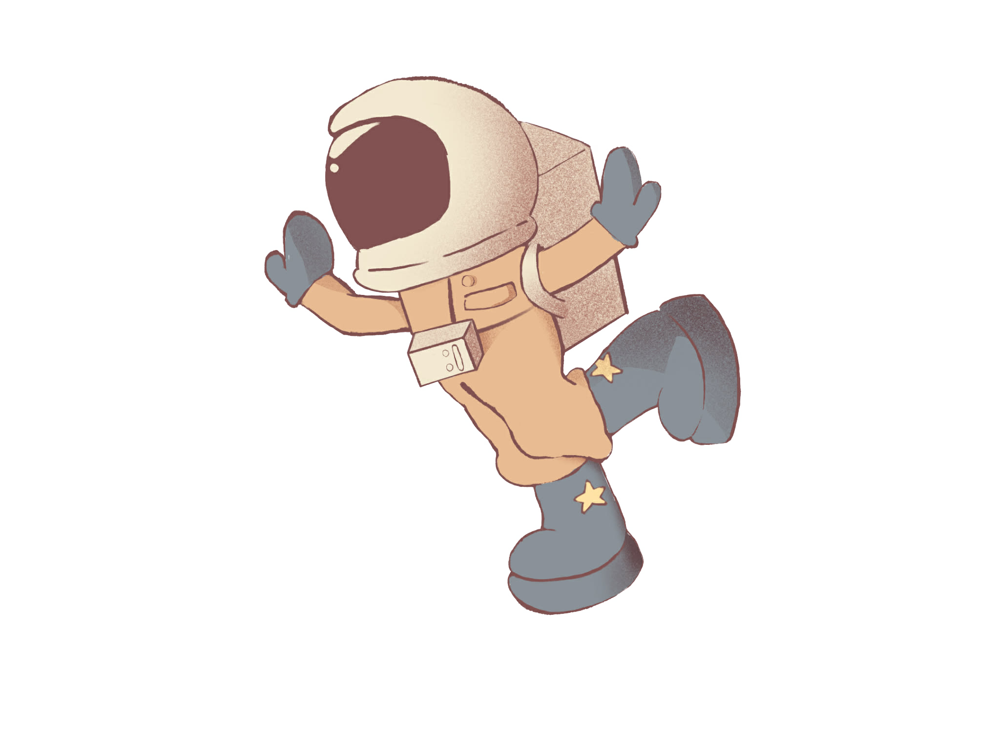

Il était une fois, un petit garçon pressé de grandir. Mais chaque nuit son esprit le ramenait vers les rêves et sa condition d'enfant.
La nuit, son esprit le baladait en tenue d’astronaute au milieu de baleines volant parmi les nuages. Il traversait ses océans de pensées à toute hâte pour voir passer le temps plus vite. Le monde l’attendait.
Plus il s'impatientait d'émerger de ses rêves enfantins, plus il sombrait dans l'incompréhension du monde et regrettait de grandir si vite.
Jusqu’au jour où il comprit : il avait grandi pour pouvoir donner aux autres la possibilité de rêver à leur tour. Et le tout faisait enfin sens : la baleine, l’astronaute, les oiseaux, les nuages…
L'œuvre s'appellerait “Au delà des nuages”. Elle sera située sur la Chaussée de Liège à Namur et invitera les passants au rêve, parce qu'il n'y a pas que les enfants qui ont le droit de rêver.

Vers l'infini, et au-delà!
